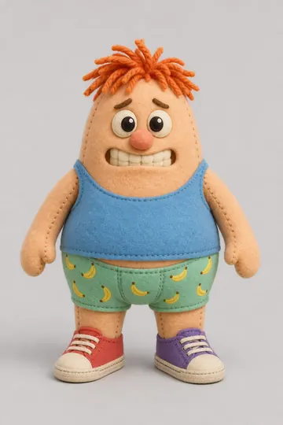
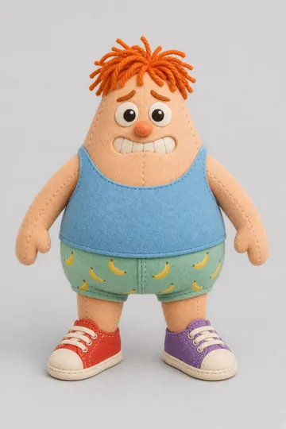
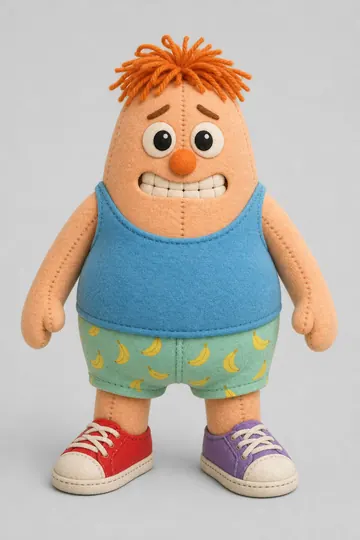
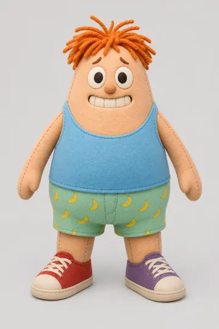
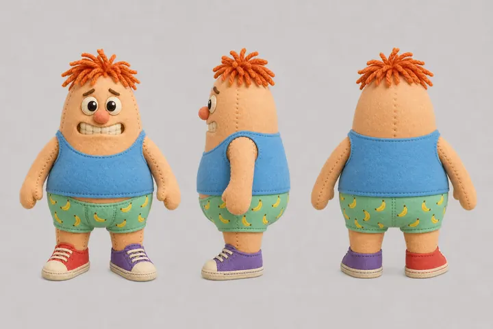
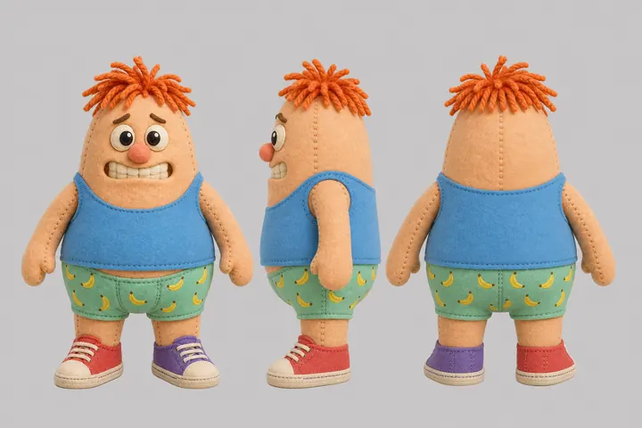
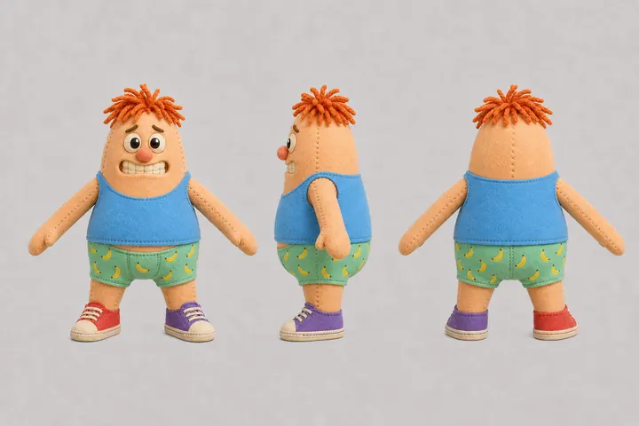
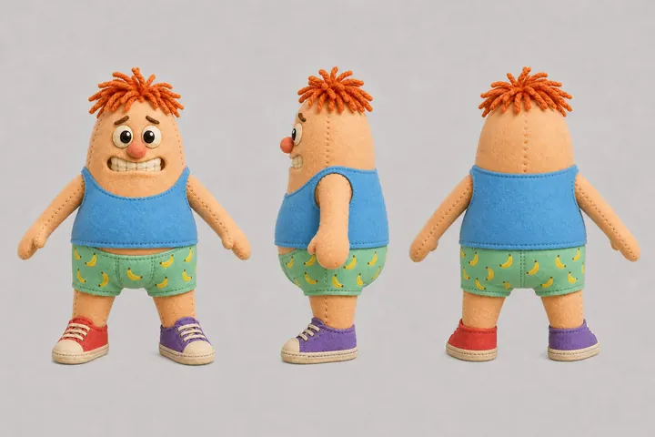

Round 1Front view
Kept: sketch 1




The prompt
Style block, the same for every asset: Stylized toy-town diorama game asset. Chunky, rounded, simple shapes with strong silhouettes, readable from a high top-down camera. Soft pastel palette with a few saturated accents, smooth shading, minimal fine detail. Single object, centered, neutral plain background. No text, no letters, no logos, no brand marks.
Benny, from the character sheet: Character concept art of Benny, an original plush toy man, full body, front view, standing in an A-pose (arms held slightly away from the body, legs slightly apart), facing the viewer. About 1.6 m tall and pear-shaped, with a soft round belly and no visible neck. Warm peach felt skin with visible stitched seams; short, stubby arms and legs. Large round cartoon eyes with felt pupils, a small round nose and a wide, worried grin. A messy tuft of orange yarn hair on top of his head. Sky-blue tank top, mint-green boxer shorts with a small yellow banana print, mismatched sneakers: one red, one purple. Even soft lighting, light grey background, the whole figure in frame.
The human kept 1, the roundest, with his belly peeking out from under the tank top (Fri 13 Nov). The
first model, gpt-image-1, turned out to be retired; the human agreed to its successor
before the call. None of the four is in a true A-pose, which rigging needs: the next round asks for
it, from sketch 1.
Round 2All the way round
Kept: sheet 1


The 3D model needs Benny from every side, the same Benny each time: front, profile and back on one sheet, drawn from the kept sketch. The red sneaker is on his right foot, so in the left profile only the purple one shows: sheet 2 got that wrong. In both, the arms still hang close to the body.
Round 3Arms out, for the rig
Kept: sheet 1, by the agent


An auto-rig finds the arms more easily when they stand away from the body. The human left the choice to the agent ("do it as you think best"): sheet 1, arms at about 40 degrees. From its front view Meshy made Benny in 3D, about 18,000 triangles in a T-pose, and put a skeleton in him, with a walk and a run.
Round 4In 3D, in the game
In the game

From the front view of round 3 Meshy built him in a T-pose, put a skeleton of 24 joints in him and animated it: a walk and a run, then an idle, a fall and an injured walk that became his clenched waddle. The five clips ride on one model, and play faster the faster he runs. Under them the old procedural layer still hops, breathes and stretches when he bites.